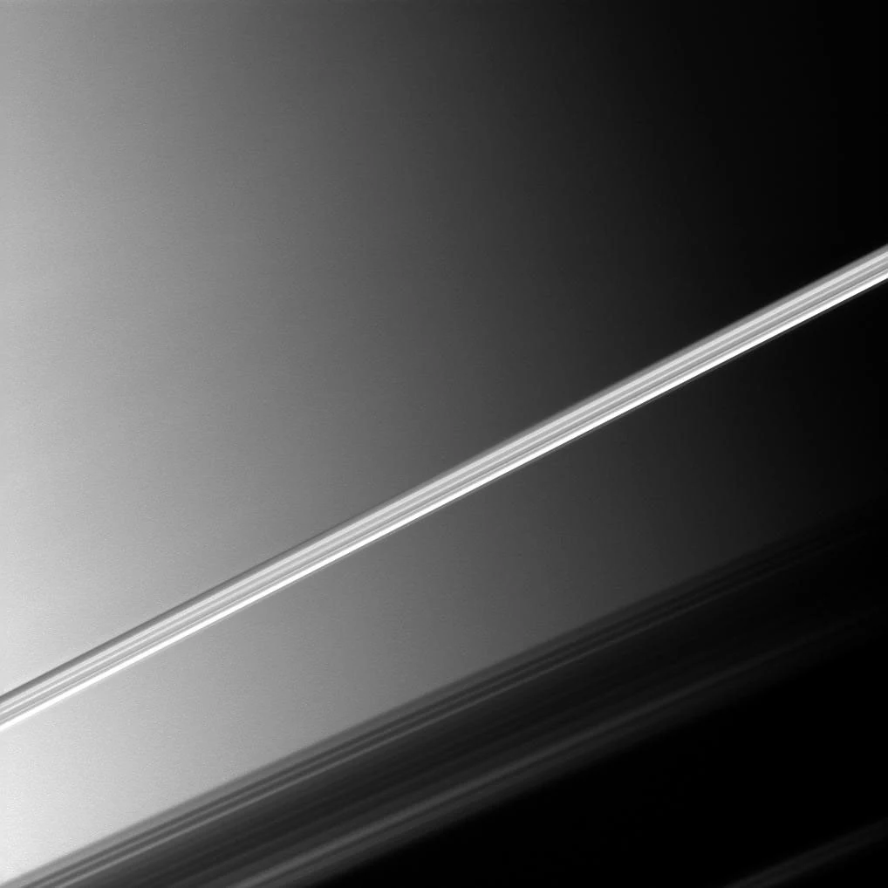

Луна 18 апреля 2026 г. Два цвета Луны Светлые материки и тёмные моря видны даже без телескопа. Откуда взялся этот рисунок? Читать статью →
 Сатурн 12 апреля 2026 г. Кольца с ребра→ На снимке «Кассини» кольца Сатурна превращаются в тонкую полосу над облаками.
Марс 4 апреля 2026 г. Ветер оставляет след→ Северные дюны Марса сохраняют в песке рисунок местных ветров.